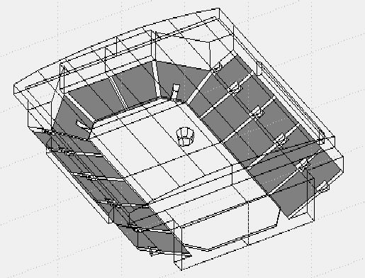
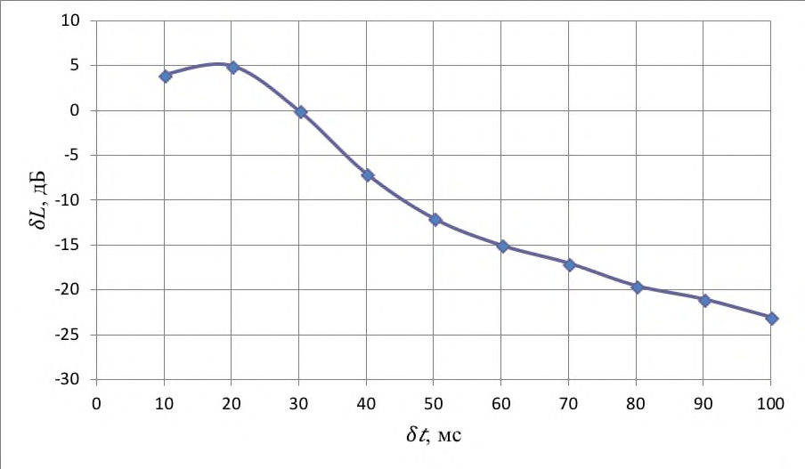
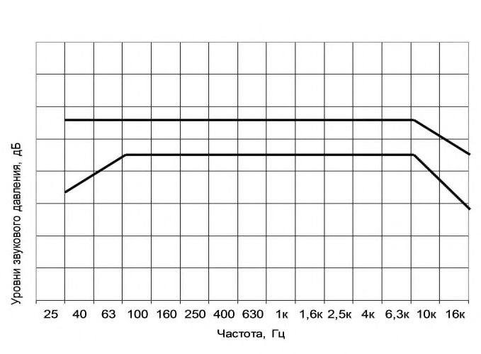

СП 415.1325800.2018 «Здания общественные. Правила акустического проектирования»
О документе: разработчики, утверждение, регистрация, ключевые слова
СВОД ПРАВИЛ СП 415.1325800.2018
Издание официальное
Москва 2018
1 ИСПОЛНИТЕЛЬ - Научно-исследовательский институт строительной физики Российской академии архитектуры и строительных наук (НИИСФ РААСН)
2 ВНЕСЕН Техническим комитетом по стандартизации ТК 465 «Строительство»
3 ПОДГОТОВЛЕН к утверждению Департаментом градостроительной деятельности и архитектуры Министерства строительства и жилищно-коммунального хозяйства Российской Федерации (Минстрой России)
4 УТВЕРЖДЕН приказом Министерства строительства и жилищно-коммунального хозяйства Российской Федерации от 15 ноября 2018 г. № 728/пр и введен в действие с 16 мая 2019 г.
5 ЗАРЕГИСТРИРОВАН Федеральным агентством по техническому регулированию и метрологии (Росстандарт)
6 ВВЕДЕН ВПЕРВЫЕ
В случае пересмотра (замены) или отмены настоящего свода правил соответствующее уведомление будет опубликовано в установленном порядке. Соответствующая информация, уведомление и тексты размещаются также в информационной системе общего пользования - на официальном сайте разработчика (Минстрой России) в сети Интернет
© Минстрой России, 2018
Настоящий нормативный документ не может быть полностью или частично воспроизведен, тиражирован и распространен в качестве официального издания на территории Российской Федерации без разрешения Минстроя России
Дата введения - 2019-05-16
УДК ОКС 93.010
Ключевые слова: здания общественные, крытые спортивно-зрелищные залы, акустика, акустические критерии залов, защита от шума, звукоизоляция.
Директор НИИСФ РААСН, д.т.н. Шубин И.Л.
Руководитель разработки -главный научный сотрудник лаборатории «Акустика залов», к.т.н. Сухов В.Н.
Введение
Настоящий свод правил разработан в соответствии с Федеральным законом от 30 декабря 2009 г. № 384-ФЗ «Технический регламент о безопасности зданий и сооружений», Федеральным законом от 27 декабря 2002 г. № 184-ФЗ «О техническом регулировании» и в развитие СП 51.13330.2011 «СНиП 23-03-2003. Защита от шума» с учетом требований СП 118.13330.2012 «СНиП 31-06-2009. Общественные здания и сооружения».
Целью настоящего свода правил является обеспечение оптимальных акустических условий в крытых спортивно-зрелищных сооружениях большой вместимости.
Свод правил разработан авторским коллективом НИИСФ РААСН (канд. техн. наук В. Н. Сухов , канд. техн. наук Х. А. Щиржецкий , инж. А.О. Субботкин ).
1Область применения
Настоящий свод правил распространяется на акустическое проектирование, обеспечивающее оптимальные акустические условия в новых и реконструируемых крытых залах СЗС большой вместимости различного назначения, в т.ч.:
- в универсальных спортивно-концертных залах вместимостью от 10 тыс. человек и более, со стационарной игровой площадкой, предназначенных для игровых видов спорта, с возможностью размещения зрителей на игровой площадке для проведения концертных мероприятий;
- на аренах и стадионах, с возможностью их трансформаций от открытого до полностью закрытого типа вместимостью более 20 тыс. человек.
2Нормативные ссылки
В настоящем своде правил использованы нормативные ссылки на следующие документы:
ГОСТ 12.1.036-81 Система стандартов безопасности труда. Шум. Допустимые уровни в жилых и общественных зданиях
ГОСТ 23337-2014 Система стандартов безопасности труда. Шум. Методы изме- рения шума на селитебной территории и в помещениях жилых и общественных зданий ГОСТ 25902-2016 Залы зрительные. Метод определения разборчивости речи ГОСТ Р ИСО 3382-1-2013 Акустика. Измерение акустических параметров поме- щений. Часть 1. Зрительные залы
ГОСТ Р ИСО 3382-2-2013 Акустика. Измерение акустических параметров помещений. Часть 2. Время реверберации обычных помещений
СП 51.13330.2011 СНиП 23-03-2003 Защита от шума (с изменением № 1)
СП 271.1325800.2016 Системы шумоглушения воздушного отопления, вентиляции и кондиционирования воздуха. Правила проектирования
Здания общественные.
Правила акустического проектирования
Public Buildings.The rules of acoustic design
СП 275.1325800.2016 Конструкции ограждающие жилых и общественных зданий. Правила проектирования звукоизоляции
СН 2.2.4/2.1.8.562-96 Шум на рабочих местах, в помещениях жилых, общественных зданий и на территории жилой застройки
3Термины и определения
- 3.1.1 звуковая волна
- Упругая продольная волна, которая распространяется в воздухе и, достигая уха человека, вызывает звуковые ощущения.
- 3.1.2 скорость звука в воздухе с , м/с
- Скорость распространения звуковых волн в воздухе. При температуре 20°С она равна 340 м/с; это значение принимается при акустических расчетах помещений, эксплуатируемых в обычных температурновлажностных условиях.
- 3.1.3 чистый тон
- Звук, форма амплитуды которого является гармонической, т.е. выражается в виде синусоидальной функции времени.
- 3.1.4 длина звуковой волны λ, м
- Величина, прямо пропорциональная скорости звука с, м/с и обратно пропорциональная его частоте f , Гц, определяемая по формуле
- 3.1.5 д иффузное звуковое поле
- Звуковое поле, во всех точках которого усредненные во времени уровень звукового давления и поток звуковой энергии, приходящий по любому направлению, постоянны.
- 3.1.6 акустическое отношение R
- Отношение плотности звуковой энергии отраженного и прямого звука в данной точке звукового поля.
- 3.1.7 время реверберации T
- Время, в секундах, необходимое для спада уровня звукового давления в замкнутых помещениях на 60 дБ после прекращения работы источника звука.
4Обозначения и сокращения
СЗС - спортивно-зрелищные сооружения;
СО - система озвучения;
СЗВ - система звуковоспроизведения;
ССО - сосредоточенные системы озвучения;
ЗСО - зональные системы озвучения;
РСО - распределенные системы озвучения;
УЗД - уровень звукового давления, дБ;
ЧХП - частотная характеристика передачи;
ИТП - индивидуальный тепловой пункт.
L - неравномерность звукового поля, дБ: разность между текущим максимальным и минимальным уровнями звукового давления в пределах звукового поля озвучиваемой площади;
L треб - требуемый уровень звукового поля, дБ.
5Общие положения
Оптимальная методика акустического проектирования современных многофункциональных залов СЗС большого объема включает следующие последовательные этапы инженерных расчетов и разработок.
СП 415.1325800.2018 руемого зала, определяемых в «живом» звуке, с локальными акустическими и электроакустическими характеристиками (приложение А), рассчитываемыми для разных режимов озвучения.
6Акустические требования к основным архитектурно-строительным параметрам залов СЗС
V 1 -удельный воздушный объем на человека, м³ /чел.;
N max -максимальное количество человек, участвующих в разных мероприятиях;
Sn -требуемая по соответствующим нормам для проектирования спортивных мероприятий максимальная площадь основания зала, м² ;
L и B -средние длина и ширина проектируемого зала, м;
H -средняя высота проектируемого зала до потолка или нижней обвязки ферм, м;
V max -максимальный общий воздушный объем зала для каждой из трансформаций, м³ .
Для оптимального выбора основных габаритов зала и для увеличения диффузности звукового поля в зале основные размеры и пропорции зала должны отвечать следующим требованиям:
7Требования к звукоизоляции залов СЗС от проникающих шумов и рекомендации по расчету и разработке шумозащитных мероприятий
После оптимального выбора основных архитектурно-строительных параметров зала следует разработать мероприятия по звукоизоляции и защите от шума зала СЗС в соответствии с ГОСТ 12.1.036, СП 51.13330 и СН 2.2.4/2.1.8.562.
Для обеспечения в проектируемом зале условий акустического комфорта следует разработать комплекс мероприятий по защите от шума инженерного оборудования в соответствии c СП 51.13330 и СП 271.1325800.
- в разделе «Архитектурно-строительные решения» (для объектов жилищногражданского строительства) должны быть выполнены расчеты ожидаемых уровней шума в помещениях с нормируемыми уровнями шума, определена требуемая звукоизоляция воздушного и ударного шумов ограждающими конструкциями здания и разработаны их технические решения;
- в разделе «Инженерное оборудование» на основе расчета ожидаемых уровней шума, создаваемого инженерным оборудованием здания, должны быть намечены и обоснованы соответствующими расчетами решения по звуко- и виброизоляции инженерного оборудования.
- объемно-планировочное решение зала в соответствии с пунктом 6.3 настоящего свода правил;
- применение ограждающих конструкций, обеспечивающих требуемую звукоизоляцию от внутренних и внешних источников шума; звукопоглощающих материалов и конструкций; звукоотражающих и звукорассеивающих конструкций;
- установку глушителей шума в системах принудительной вентиляции и кондиционирования воздуха.
- выявление источников шума и определение их шумовых характеристик в соответствии с ГОСТ 23337;
- выбор точек в помещениях, для которых необходимо провести расчет в соответствии с ГОСТ 23337;
- определение путей распространения шума от источника (источников) до расчетных точек и потерь звуковой энергии по каждому из путей (снижение за счет расстояния, экранирования, звукоизоляции ограждающих конструкций, звукопоглощения и др.);
- определение ожидаемых уровней шума в расчетных точках;
- определение требуемого снижения уровней шума на основе сопоставления ожидаемых уровней шума с допустимыми уровнями шума;
- разработка мероприятий по обеспечению требуемого снижения уровней шума;
- проверочный расчет достаточности выбранных шумозащитных мероприятий.
СП 415.1325800.2018
В залах, предназначенных только для проведения тренировок по разным видам спорта, когда зал разделен на части по технологическим условиям, требований к звукоизоляции перегородок не предъявляют.
Таблица 7.1 - Максимальные уровни звукового давления, дБ
| Вид спорта, режим | Среднегеометрические частоты октавных полос, Гц | Среднегеометрические частоты октавных полос, Гц | Среднегеометрические частоты октавных полос, Гц | Среднегеометрические частоты октавных полос, Гц | Среднегеометрические частоты октавных полос, Гц | Среднегеометрические частоты октавных полос, Гц | Среднегеометрические частоты октавных полос, Гц | Среднегеометрические частоты октавных полос, Гц |
|---|---|---|---|---|---|---|---|---|
| Вид спорта, режим | 63 | 125 | 250 | 500 | 1000 | 2000 | 4000 | 8000 |
| 1 Футбол: тренировка | 63 | 75 | 75 | 71 | 69 | 68 | 65 | 52 |
| 2 Хоккей на траве: тренировка | 65 | 70 | 73 | 69 | 68 | 67 | 62 | 52 |
| 3 Легкая атлетика: тренировка | 63 | 59 | 60 | 64 | 62 | 61 | 58 | 45 |
| соревнования | 83 | 90 | 92 | 96 | 85 | 80 | 74 | 60 |
| 4 Гимнастика: тренировка | 62 | 58 | 59 | 59 | 55 | 54 | 51 | 45 |
| соревнования | 70 | 76 | 76 | 80 | 79 | 73 | 66 | 54 |
| 5 Волейбол: соревнования | 75 | 83 | 88 | 90 | 96 | 92 | 92 | 80 |
| 6 Гандбол: соревнования | 60 | 67 | 75 | 79 | 77 | 76 | 76 | 68 |
| 7 Хоккей: тренировка | 63 | 64 | 64 | 66 | 75 | 73 | 70 | 62 |
| соревнование | 100 | 103 | 105 | 109 | 108 | 100 | 94 | 80 |
| 8 Фигурное катание с музыкой: тренировка соревнование | 59 | 63 | 69 | 68 | 66 | 62 | 61 | 55 |
| 69 | 83 | 88 | 90 | 90 | 82 | 77 | 65 |
Таблица 7.2 - Требуемая звукоизоляция между комментаторскими кабинами
| Среднегеометриче- ские частоты, Гц | 63 | 125 | 250 | 500 | 1000 | 2000 | 4000 | 8000 |
|---|---|---|---|---|---|---|---|---|
| Звукоизоляция, дБ | 20 | 30 | 40 | 45 | 45 | 37 | 29 | 25 |
Уровни шума, генерируемого сопловыми воздухораспределителями в зависимости от конструктивных особенностей, расхода воздуха (от 250 до 25000 м³ /ч), перепада давления (от 100 до 200 Па) и размеров помещения, должны находиться в диапазоне от 28 до 35 дБА.
8Акустические критерии оценки залов СЗС
8.1Нормативные значения акустических критериев
Для акустического проектирования зала следует использовать две системы параметров акустической обстановки в СЗС:
1) глобальные, определяющие средние значения акустических характеристик зала;
2) локальные, определяющие акустическую обстановку в отдельных точках (зонах) проектируемого зала.
Глобальными критериями акустики залов являются: частотная характеристика времени реверберации и степень диффузности (равномерности) звукового поля. Нормативные требования по объемным оптимумам времени реверберации и методика его расчета представлены в 8.2.
Локальные критерии акустики залов представлены в приложении А и их следует определять расчетом с помощью математического (компьютерного) моделирования (см. 8.3). С помощью рассчитанных параметров объективно оцениваются разборчивость речевой информации и качество восприятия музыки в различных зонах проектируемого зала (партер, трибуны, ложи и т.п.). Расчет локальных критериев следует производить только в режиме озвучения зала.
8.2Время реверберации и звукопоглощающая отделка проектируемого зала

- концертный режим;
- спортивный режим
Рисунок 8.1 - Рекомендуемое время реверберации на средних частотах (500 1000 Гц) в зависимости от объема зала
Если f кр<125 Гц, то расчет времени реверберации T , с, следует проводить в шести октавных полосах со среднегеометрическими частотами 125, 250, 500, 1000, 2000 и 4000 Гц по следующим формулам:
- в диапазоне 125 1000 Гц
- в диапазоне 2000 4000Гц
где V - воздушный объем помещения, м³ ; φ ( ср ) = -ln(1 - ср) - функция среднего коэффициента звукопоглощения (КЗП) помещения ср;
S общая площадь ограждений зала, м² ; n - показатель, учитывающий поглощение звука в воздухе, значения которого приведены в приложении Г (при отсутствии точной информации о предполагаемом влажностном режиме в проектируемом зале, показатель n при расчетах принимают равным для частоты 2000 Гц - 0,009, для частоты 4000 Гц - 0,022).
Средний КЗП помещения ср в соответствующих октавных полосах частот следует определять по формуле:
Суммарную эквивалентную площадь звукопоглощения (ЭПЗ) зала Aобщ, м² , следует определять по формуле
A
где i α iSi - сумма произведений площадей отдельных поверхностей зала на соответствующие КЗП i для данной частоты;
kAk - сумма эквивалентного звукопоглощения (ЭПЗ), вносимого слушателями и креслами, м² ; αдоб - коэффициент добавочного звукопоглощения, учитывающий эффект, вызываемый проникновением звука в различные щели и отверстия, колебаниями находящихся в зале гибких элементов, световой арматурой и другим оборудованием зала. Коэффициент добавочного звукопоглощения на низких частотах принимают равным 0,09 и 0,05 - на средних и высоких частотах. В залах, где в соответствии с проектом сильно выражены условия, вызывающие добавочное звукопоглощение, эти значения следует увеличить на 30 %, а в залах с простым интерьером - уменьшить на 30 %.
В приложениях В и Г приведены необходимые для расчетов времени реверберации значения частотных характеристик КЗП некоторых материалов и конструкций, а также ЭПЗ спортсменов, зрителей и кресел.
Расчеты времени реверберации зала следует представлять в табулированном виде, с округлением результатов расчетов с погрешностью до ±0,05 с. Для четкого представления о соответствии расчетного времени реверберации зала его оптимальным значениям весь анализируемый диапазон звуковых частот 125 ÷ 4000 Гц следует разделять на три характерных зоны: 1) низкие частоты (125 ÷ 250 Гц), 2) средние частоты (500 ÷ 1000 Гц) и 3) высокие частоты (2000 ÷ 4000 Гц). Нормируемым диапазоном является диапазон средних частот.
8.3Расчет акустических критериев зала СЗС на основе компьютерного моделирования
Математическая модель зала представляет собой совокупность плоских секций, поэтому на основании чертежей зала следует составить его модель с помощью компьютерной программы. Интерьер зала формируется из совокупности плоских секций. Каждой секции должно соответствовать (на данной октавной или 1/3-октавной полосе частот) определенное значение коэффициента звукопоглощения в зависимости от типа материала ограждения. Конкретные значения заимствуются из базы данных компьютерных программ. Расчеты параметров акустического качества следует производить для площади зрительских мест зала. Пример вида зала в изометрии, полученного при разработке математической (компьютерной) модели, приведен на рисунке 8.2.
Рисунок 8.2 -Вид зала в изометрии согласно математической модели (серым цветом выделены зрительские места на трибунах)

9Требования к основным характеристикам системы озвучения залов СЗС
- воспроизведение речи (объявления диктора, комментатора и т.д.);
- воспроизведение музыкального сопровождения мероприятий (фонограммы, звуковые эффекты и т.д.);
- усиление речи;
- усиление голосов солистов и музыкальных инструментов.
- громкость звучания различных программ;
- понятность речевой информации;
- качество воспроизведения музыкальных программ;
- наличие шумовых помех и различных эхообразований.
- средние значения и неравномерность поля уровней звукового давления;
- сквозная частотная характеристика звукопередачи помещения;
- разборчивость речи и ясность музыкальных сигналов;
- громкость звука или отношение сигнал/шум при повышенном шумовом фоне;
- объективная оценка влияния на качество работы СО различных эхообразований (при их восприятии публикой).
Таблица 9.1 -Требуемые средние УЗД на площади СО
| Назначение СО | L треб , дБ | L Δ , дБ |
|---|---|---|
| Воспроизведение музыки и театраль- ных эффектов | 100 | 3 |
| Воспроизведение музыкальных про- грамм; усиление голосов солистов | 94 - 96 | 3 |
| Усиление речи | 80 - 86 | 4 |
| Усиление речи на фоне музыкальных программ | 94 - 96 | 4 |
Примечание - Требования к звуку и другим характеристикам СО открытых (полуоткрытых) спортивных арен и стадионов вместимостью более 20 тыс. человек представлены в приложении Д.
где f L треб - требуемые уровни звукового давления в основных частотных полосах (низкие, средние, высокие), дБ.
Для точных расчетов по формуле (9.1) следует учитывать допустимые уровни шума в октавных полосах частот при условии, что обеспечение этих уровней уже достигнуто на предыдущих этапах расчета.
η - к.п.д. звукоизлучателей (обычно не более 1%); где
П - пик-фактор акустического сигнала (у средней речи не более 5).
- в каждой, даже самой удаленной, точке озвучения уровень прямого поля излучателя должен быть не менее чем в 2 раза выше уровня реверберационной составляющей поля (значение акустического отношения R 0,5);
- разность хода по времени между соседними в цепочке громкоговорителями должна быть даже в точке максимального запаздывания в зоне восприятия звука не более 20 мс, что соответствует разности хода по расстоянию около 7 м (последнее условие предусматривает одинаковую мощность излучения всех источников звука).
9.13. Окончательный выбор СО следует определять, исходя из выполнения следующего условия для радиуса действия прямого звука СО:
где α 1 α -= S В - постоянная зала СЗС, зависящая от диапазона частот (низкие, средние, высокие);
( ) Θ D -показатель направленности излучателя на исследуемую точку в зависимости от угла (в том же диапазоне). Для предварительных расчетов допускается принимать = 1.
На данном этапе на разработанной компьютерной акустической модели зала СЗС следует произвести расчет всех акустических и электроакустических характеристик на соответствие зонам оптимумов, представленных в приложении А.
- контроля опасности эхообразований выбранной системы размещения громкоговорителей;
- сравнения результатов расчета разборчивости речи, полученных разными методами;
- анализа сквозных частотных характеристик СО для настройки системы для воспроизведения речевых и музыкальных сигналов.
При данном запаздывании δ t величина δ L не должна лежать выше пороговой кривой, показанной на рисунке 9.3.

t - запаздывание звука громкоговорителя по отношению к соседнему громкоговорителю; L -разность уровней звука между соседними громкоговорителями
Рисунок 9.3 - Порог заметности эха
Примечание - При равномерном расположении громкоговорителей СО следует провести проверку отсутствия эха для одной точки озвучиваемой поверхности, а при неравномерном - необходимо рассмотреть несколько точек, охватывающих всю озвучиваемую поверхность.
- 1) по методу оптимизации параметра «четкости речи»;
- 2) по методу оптимизации параметра «индекс передачи речи».
В соответствии с ГОСТ 25902 достижение слоговой разборчивости более 80 % обеспечивается при показаниях параметра «четкости речи» -3 дБ (приложение А).
Параметр «индекс разборчивости речи» (STI) определяется по переходным характеристикам методом модуляционной передаточной функции (MTF). Индексы разборчивости речи, принятые по ГОСТ Р ИСО 3382-1 и ГОСТ Р ИСО 3382-2, представлены в таблице 9.2.
Таблица 9.2 - Индексы передачи речи
| Значения STI(RASTI) | 0,76-1,00 | 0,61-0,75 | 0,46-0,60 | 0,31-0,45 | 0,00-0,30 |
|---|---|---|---|---|---|
| Разборчивость речи | Отличная | Хорошая | Удовлетво- рительная | Плохая | Недопустимо плохая |
В случае совпадения результатов контрольных расчетов по обоим методам, проблему достижения требуемой понятности речевой информации в проектируемом зале СЗС следует считать решенной.
Рисунок 9.4 - Рекомендуемая форма ЧХП при звукоусилении речи (одно деление по оси ординат равно 5 дБ)
Рисунок 9.5 - Рекомендуемая форма ЧХП при звуковоспроизведении музыки высокого уровня (одно деление по оси ординат равно 5 дБ)
10. Состав проектной документации по акустике проектируемого зала СЗС
На стадии рабочего проектирования должен быть разработан документ, охватывающий все мероприятия по акустическому проектированию по разделам «Акустика», «Шумозащита» и «Электроакустика». В данный документ должны быть обязательно включены результаты всех расчетных операций, предложения по форме, материалам и конструкциям ограждений, составу электроакустических трактов и режимов работы СО.
1к
1,6к
2,5к
4к
6,3к
10к
АПриложение А. Локальные критерии акустики залов
А.1 Все интегральные энергетические параметры, основанные на обработке импульсных характеристик помещений, имеют в соответствии с ГОСТ Р ИСО 3382-1 единую общую формулу:
где t k 1 , t k 2 - пределы интегрирования (в том числе и в случае t k 1 = tk 2, а также t k 2 = 0), мс; p 0, ( t )- текущее звуковое давление импульсного отзвука с переменной диаграммой направленности (0 - шаровая диаграмма приема звука, т.е. ненаправленный прием; -диаграмма в виде «восьмерки»);
- А.2 Используя формулу (А.1) можно рассчитать локальные критерии акустики залов, такие как:
А.2.1 Мера громкости G . Зона оптимумов меры громкости G = - 4 + 4 дБ.
- А.2.2 Мера четкости для речи D 50. Зона оптимумов меры четкости D 50 = 0 -5 дБ. При этих условиях по проверенным опытным путем корреляционным связям со слоговой разборчивостью речи обеспечиваются субъективные оценки артикуляции I и II классов (т.е. не ниже хороших).
- А.2.3 Прозрачность музыкальных звучаний C 80. Ниже представлены рекомендации по зонам оптимумов для параметра С 80 по типам музыкальных звучаний.
Таблица А.1 - Зоны оптимумов параметра С 80.
| Тип музыкального звучания | Органно- хоральные исполнения | Симфоническая музыка | Опера, камерная музыка | Эстрада, элек- тронно- музыкальные инструменты |
|---|---|---|---|---|
| С 80 , дБ | -3 -9 | -3 +3 | +3 +6 | +6 + 12 |
А.2.4 Объемность (степень пространственного впечатления) LE . Данный критерий является некоторым аналогом степени стереофоничности музыкальных звучаний. Зона оптимумов LE = -5 -7 дБ
Общие требования к звукопоглощающим материалам и конструкциям, до-
БПриложение Б. пускаемым к применению в залах СЗС
Для достижения высоких коэффициентов звукопоглощения акустических конструкций толщина плит должна быть не менее 50 - 100 мм. Акустические плиты должны удовлетворять следующим физико-техническим и эксплуатационным требованиям:
- иметь внешний вид, отвечающий требованиям дизайн-проекта и архитектурному решению интерьера;
- обладать коэффициентом формы, позволяющим создавать изогнутые (криволинейные) поверхности звукопоглощающей облицовки;
- обеспечивать выполнение противопожарных требований - быть негорючими и не способствовать распространению огня;
- быть термо- и влагостойкими, сохранять свои звукопоглощающие свойства в течение всего периода эксплуатации;
- допускать возможность очистки, в том числе и влажным способом, и сохранять свой первоначальный цвет;
- соответствовать санитарно-гигиеническим требованиям;
- обеспечивать удобство монтажа и возможность замены отдельных поврежденных элементов облицовки.
ВПриложение В. Частотные характеристики коэффициентов звукопоглощения некоторых материалов и конструкций
Таблица В.1 - Строительные материалы и конструкции
| Частоты октавных полос, Гц | 125 | 250 | 500 | 1000 | 2000 | 4000 |
|---|---|---|---|---|---|---|
| Бетон окрашенный | 0,01 | 0,01 | 0,02 | 0,02 | 0,02 | 0,03 |
| Штукатурка по металлической сетке | 0,04 | 0,05 | 0,06 | 0,08 | 0,05 | 0,05 |
| Мрамор, гранит и другие каменные породы шлифованные | 0,01 | 0,01 | 0,01 | 0,01 | 0,02 | 0,02 |
| Травертин | 0,02 | 0,03 | 0,03 | 0,03 | 0,04 | 0,04 |
| Метлахская плитка | 0,01 | 0,01 | 0,02 | 0,02 | 0,02 | 0,03 |
| ГКЛ толщиной 12,5 мм с воздушной прослой- кой 50 - 150 мм | 0,30 | 0,25 | 0,10 | 0,08 | 0,05 | 0,04 |
| Пол паркетный | 0,04 | 0,04 | 0,07 | 0,06 | 0,06 | 0,07 |
| Портьеры плюшевые со складками, поверх- ностная плотность - 0,65 кг/м² | 0,15 | 0,35 | 0,55 | 0,70 | 0,70 | 0,65 |
Таблица В.2 - Некоторые акустические материалы и конструкции
| Коэффициент звукопоглощения на частотах, Гц | Коэффициент звукопоглощения на частотах, Гц | Коэффициент звукопоглощения на частотах, Гц | Коэффициент звукопоглощения на частотах, Гц | Коэффициент звукопоглощения на частотах, Гц | Коэффициент звукопоглощения на частотах, Гц | |
|---|---|---|---|---|---|---|
| Материал или конструкция | 125 | 250 | 500 | 1000 | 2000 | 4000 |
| Слой пористо-волокнистого материала 1) толщиной 100 мм, покрытый стеклотка- нью и перфорированным металлическим экраном толщиной 1,2 мм, с коэффициен- том перфорации 24 %, диаметром отвер- стий 5,5 мм: - без воздушного относа | 0,30 | 0,90 | 0,99 | 0,99 | 0,99 | 0,95 |
| - с воздушным относом | 0,47 | 0,99 | 0,99 | 0,99 | 0,99 | 0,99 |
| Слой пористо-волокнистого материала 1) толщиной 100 мм, покрытый стеклотка- нью, размещенный без воздушного отно- са за панелями из просечно-вытяжного листа толщиной 1 мм, с коэффициентом перфорации 74% | 0,35 | 0,75 | 0,99 | 0,95 | 0,90 | 0,90 |
| Напыляемое звукопоглощающее покры- тие на основе хлопьев целлюлозы для по- толков и стен. Толщина наносимого слоя от 5 до 35 мм: - толщина 15 мм - толщина 35 мм | 0,14 | 0,25 | 0,26 | 0,95 | 0,97 | 1,00 |
| 0,32 | 0,73 | 0,97 | 1,00 | 1,00 | 0,94 |
Окончание таблицы В.2
| Материал и конструкция | Коэффициент звукопоглощения на частотах, Гц | Коэффициент звукопоглощения на частотах, Гц | Коэффициент звукопоглощения на частотах, Гц | Коэффициент звукопоглощения на частотах, Гц | Коэффициент звукопоглощения на частотах, Гц | Коэффициент звукопоглощения на частотах, Гц |
|---|---|---|---|---|---|---|
| 125 | 250 | 500 | 1000 | 2000 | 4000 | |
| Гладкое бесшовное акустическое по- крытие потолков или стен на основе ба- зальтового волокна толщиной 35 мм | 0,23 | 0,46 | 0,95 | 0,92 | 0,92 | 0,92 |
| Иглопробивное стекловолокно в обо- лочке из спанбонда или стеклоткани (ТЗИ) толщиной 15 мм: - с воздушным относом 100 мм | 0,20 | 0,50 | 0,90 | 0,90 | 0,80 | 0,80 |
| - с воздушным относом 100 мм, за- полняемым на 50 мм минплитой плот- ностью 40 - 60 кг/м³ | 0,50 | 0,90 | 1,00 | 0,95 | 0,85 | 0,80 |
| Декоративные панели из древесного во- локна на цементном связующем толщи- ной 35 мм, плотностью 420 кг/м³ - без воздушного относа: - на относе 50 мм с заполнением минпли- | 0,20 | 0,25 | 0,60 | 0,90 | 0,80 | 0,85 |
| той плотностью 40 - 60 кг/м³ | 0,35 | 0,80 | 1,00 | 0,75 | 0,80 | 0,85 |
| нием 50-миллиметровой минплитой плотностью 40 - 60 кг/м³ | 0,45 | 0,95 | 0,85 | 0,60 | 0,80 | 0,80 |
ГПриложение Г. Эквивалентное звукопоглощение
Таблица Г.1 - Эквивалентное звукопоглощение спортсменов, м²
| Плотность расстановки спортсменов при отсутствии в зале зрителей | Частота, Гц | Частота, Гц | Частота, Гц | Частота, Гц | Частота, Гц | Частота, Гц |
|---|---|---|---|---|---|---|
| Плотность расстановки спортсменов при отсутствии в зале зрителей | 125 | 250 | 500 | 1000 | 2000 | 4000 |
| 6 м² /чел. | 0,15 | 0,23 | 0,61 | 0,97 | 1,10 | 1,10 |
| 3 м² /чел. | 0,13 | 0,21 | 0,48 | 0,81 | 0,96 | 1,00 |
| 1 м² /чел. | 0,11 | 0,20 | 0,32 | 0,66 | 0,81 | 0,89 |
| 0,5 м² /чел. | 0,10 | 0,18 | 0,28 | 0,59 | 0,65 | 0,72 |
| 0,25 м² /чел. | 0,07 | 0,16 | 0,26 | 0,45 | 0,54 | 0,60 |
Таблица Г.2 - Эквивалентное звукопоглощение зрителей, м²
| Зрители и кресла | Частота, Гц | Частота, Гц | Частота, Гц | Частота, Гц | Частота, Гц | Частота, Гц |
|---|---|---|---|---|---|---|
| Зрители и кресла | 125 | 250 | 500 | 1000 | 2000 | 4000 |
| Зритель в мягком и полумягком кресле | 0,25 | 0,30 | 0,40 | 0,45 | 0,45 | 0,40 |
| Зритель в жестком кресле | 0,20 | 0,25 | 0,30 | 0,35 | 0,35 | 0,35 |
| Мягкое кресло с по- ристым заполните- лем сиденья и спин- ки, закрытое возду- хопроницаемой тканью | 0,08 | 0,10 | 0,15 | 0,15 | 0,20 | 0,20 |
| То же кресло, за- крытое искусствен- ной кожей | 0,08 | 0,10 | 0,12 | 0,10 | 0,10 | 0,08 |
| Жесткое кресло | 0,02 | 0,02 | 0,03 | 0,04 | 0,04 | 0,05 |
Таблица Г.3 - Значения коэффициента n , м -1 , для учета поглощения звука в воздухе при температуре 20 °С
| Относительная влаж- ность воздуха,% | Частота, Гц | Частота, Гц |
|---|---|---|
| Относительная влаж- ность воздуха,% | 2000 | 4000 |
| 30 | 0,012 | 0,038 |
| 40 | 0,010 | 0,029 |
| 50 | 0,010 | 0,024 |
| 60 | 0,009 | 0,022 |
| 70 | 0,008 | 0,021 |
| 80 | 0,008 | 0,020 |
| 90 | 0,008 | 0,020 |
ДПриложение Д. Требования к основным характеристикам систем озвучения открытых (полуоткрытых) спортивных арен и стадионов
Крупные спортивные сооружения вместимостью более 20 тыс. человек, в т.ч. стадионы и трансформируемые спортивные арены, должны иметь значения электроакустических характеристик не хуже следующих:
- максимальный уровень звукового давления - 116 дБ;
- неравномерность уровня прямого звука - ±3 дБ;
- неравномерность частотной характеристики:
- +6/-3 дБ в диапазоне 50 - 120 Гц,
- ±3 дБ в диапазоне 120 - 5000 Гц,
- +4/-4 дБ в диапазоне 5000 - 12000 Гц;
- индекс разборчивости речи - STI > 0,55 при рекомендации STI > 0,75.
Звуковая система должна иметь возможность компенсировать атмосферные потери на высоких частотах.